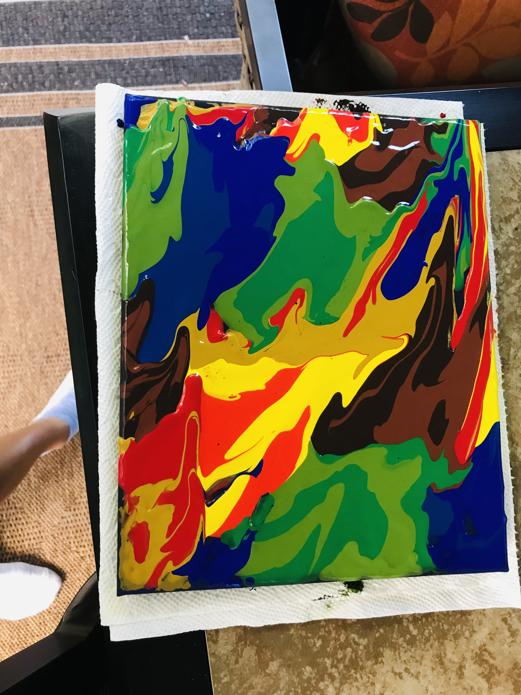
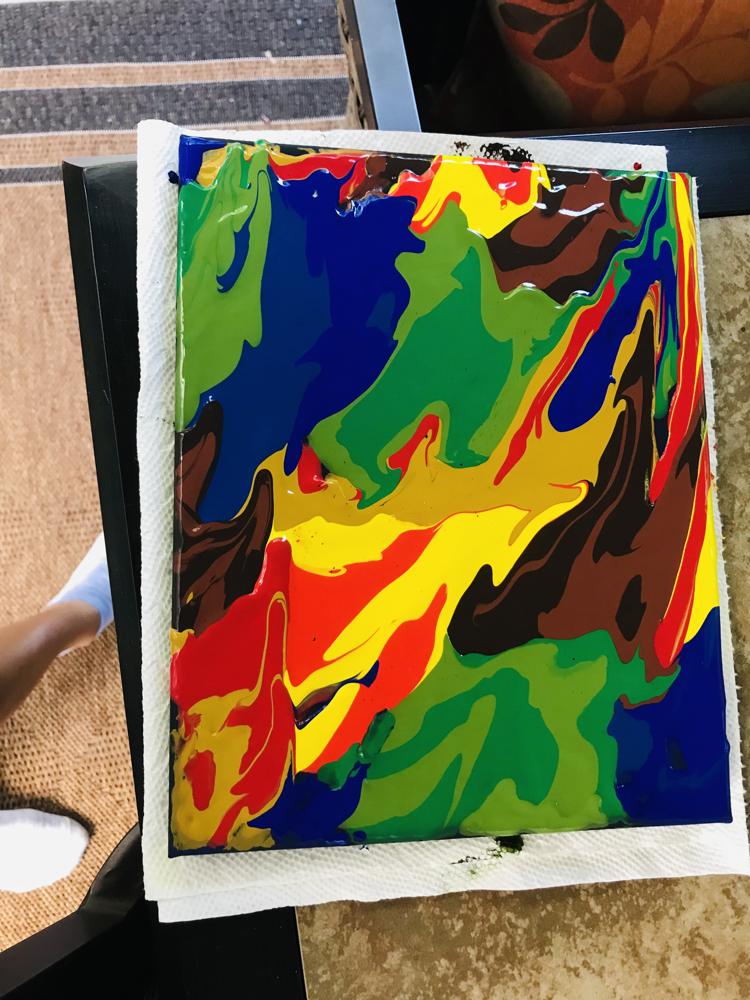
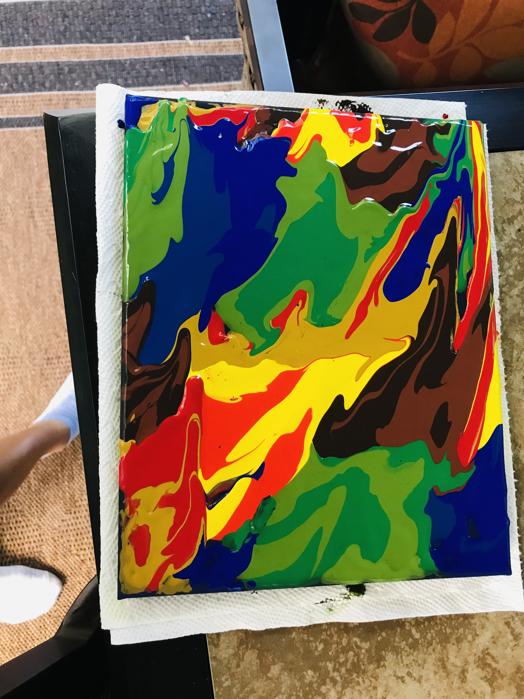

Art has always been a big part of my life.
I've been into drawing and painting and creating for
a very long time, and i continue to make art today.
It's one of my favorite things to do in my free time,
though since i am such a perfectionist there are only a few
pieces of mine that i really like. Here are some;
